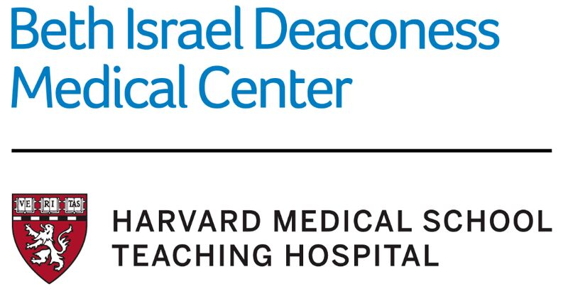
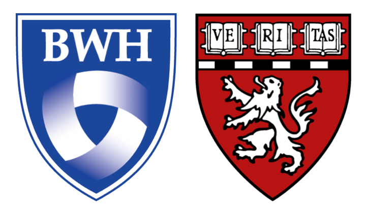

Research Assistant Co-op at the Fishell Lab
Broad Institute of MIT and Harvard | Boston, MA | July 2024 - December 2024

Conducted research under Chen-Yu Wang, MD, PhD, in the Fishell Lab at the Stanley Center for Psychiatric Research.
Performed cardiac perfusions for brain fixation and extraction, serial sectioning of brain tissue,
immunohistochemistry on brain sections, fluorescent microscopy, cell counting (using ImageJ),
ATAC-seq, utilized R to create graphs, genotyping (PCR and Gel Electrophoresis), and cage maintenance.
Attended biweekly lab meetings to learn about other lab members’ projects. Performed literature reviews to
better understand the background and best methods for experiments.
Research Assistant at the Saper Lab
Beth Israel Deaconess Medical Center and Harvard Medical School | Boston, MA | Fall 2023 - Present

Researching under Sydney Aten, PhD, in the lab of Clifford Saper, MD, PhD.
Performing serial sectioning of mouse brains and immunohistochemistry staining to verify stereotaxic virus injection locations in the brain.
Conducting body temperature probe implantation surgeries to track thermoregulation.
Analyzing EEG and EMG data to classify sleep states (REM, NREM, awake) for sleep scoring.
Utilizing Python to generate Raster Plots visualizing mouse behavior.
Training undergraduate students in essential laboratory techniques and research methodologies.
Medicinal Chemistry Co-op at the Laboratory for Drug Discovery in Neuroscience
Brigham and Women's Hospital and Harvard Medical School | Boston, MA | July 2023 - December 2023

Conducted research under Chen-Yu Wang, MD, PhD, in the Fishell Lab at the Stanley Center for Psychiatric Research.
Performed cardiac perfusions for brain fixation and extraction, serial sectioning of brain tissue, immunohistochemistry on brain sections,
fluorescent microscopy, cell counting (using ImageJ), ATAC-seq, utilized R to create graphs, genotyping (PCR and Gel Electrophoresis),
and cage maintenance. Attended biweekly lab meetings to learn about other lab members’ projects.
Performed literature reviews to better understand the background and best methods for experiments.
Thoracic Surgery Research Assistant
Tufts Medical Center | Boston, MA | January 2025 - Present
Studying thoracic anatomy and surgical techniques, including lobectomies and segmentectomies, to enhance understanding of
minimally invasive surgery procedures. Creating annotated datasets of thoracic surgery procedures to support
AI-driven advancements in surgical education and complication rate reduction. Contributing to the development
of artificial intelligence models aimed at improving surgical training, intraoperative decision-making, and patient outcomes.
Discrete Structures Teaching Assistant
Northeastern University | Boston, MA | Spring 2023

Guided students in learning the foundational underpinnings of mathematics used for
computer science. Course content included combinatorics, algorithmic analysis, and number/logical
representation in computing. Hosted weekly office hours and graded assignments/tests.
Proofreading assignments to ensure clarity and correctness.
Fundamentals of Computer Science I Teaching Assistant
Northeastern University | Boston, MA | Fall 2022
Assisted a course with over 800 students. Debugged DrRacket programs, hosted office hours, graded assignments,
and responded to various students inquiries on a Piazza forum.
Mathematics Teaching Assistant
GST BOCES | Horseheads, NY | Summer 2022

Collaborated with teachers to support 7th-grade summer school students in mastering foundational math concepts,
including fractions, decimals, percentages, linear function, geometry, and basic statistics.
Delivered one-on-one tutoring, ensuring personalized support for students with varying levels of understanding.
Developed and implemented practice exercises and interactive lessons to reinforce key math skills,
preparing students for a final exam essential to advancing to 8th grade. Fostered a positive and encouraging classroom environment.
Organic Chemistry II Teaching Assistant
Northeastern University | Boston, MA | Fall 2023
Led weekly review sessions to reinforce course content.
Hosted office hours to answer specific student questions.